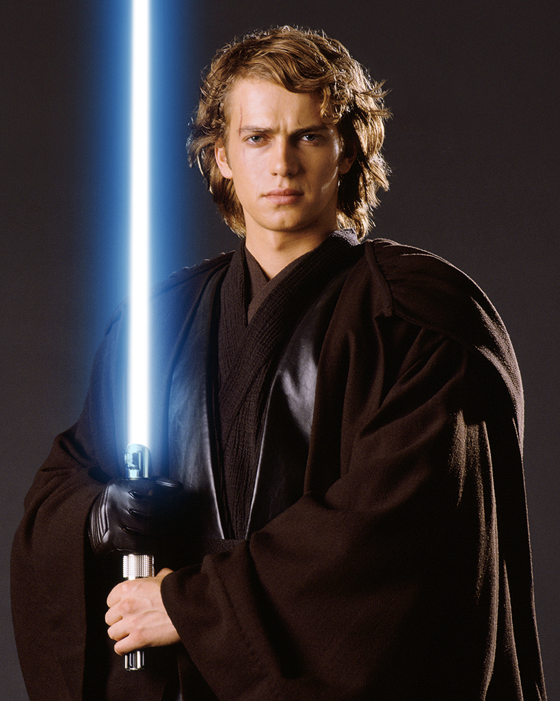
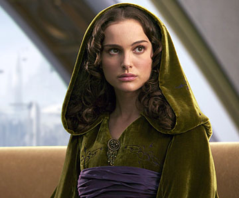
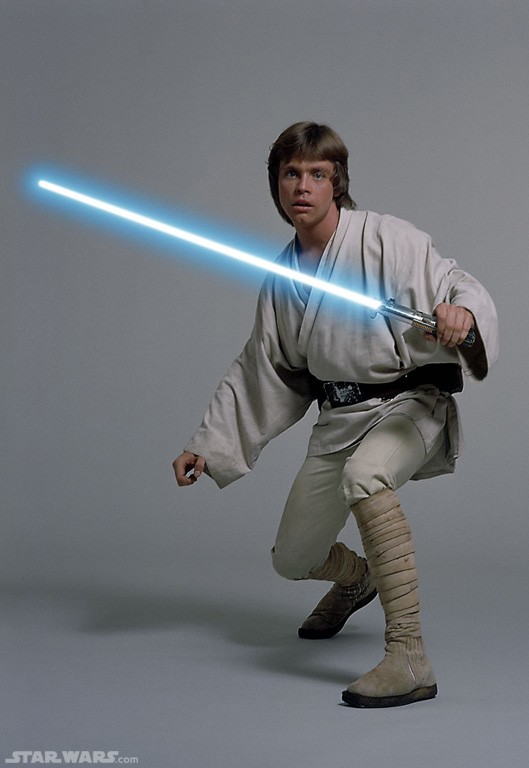
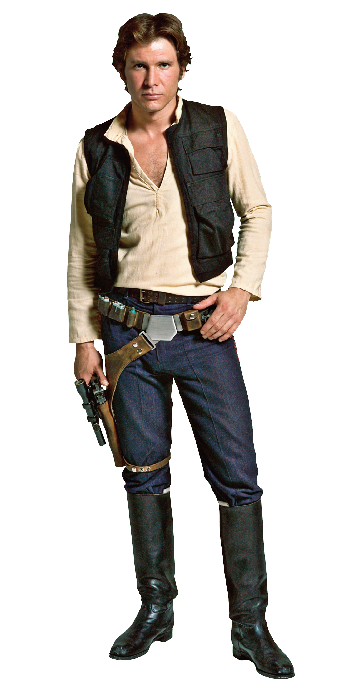
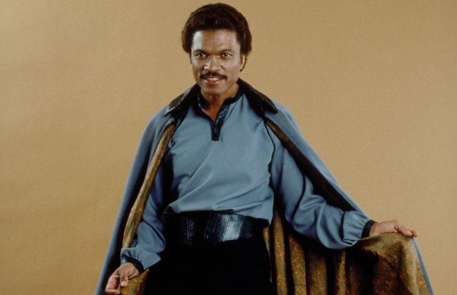
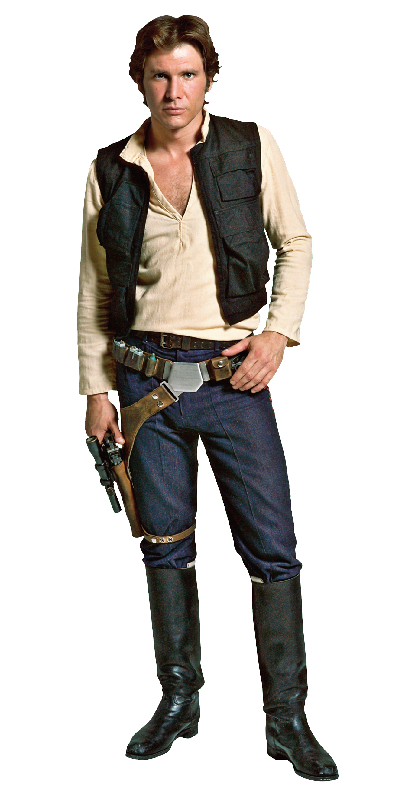
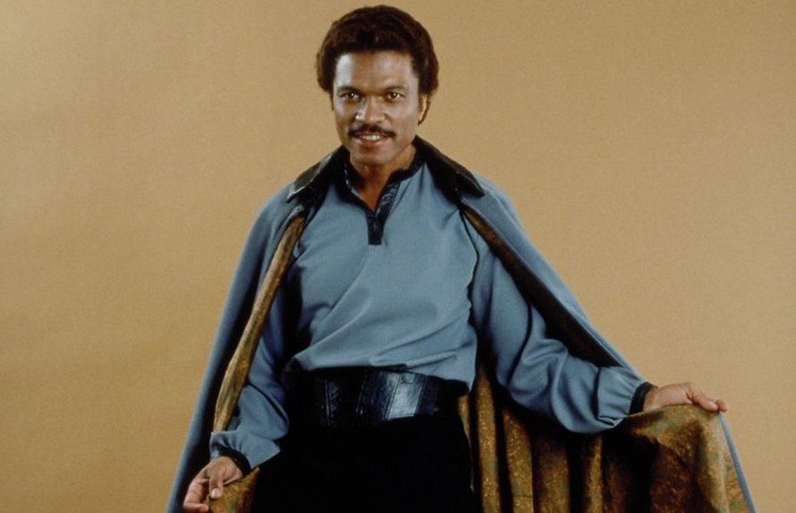

THE MOST IMPORTANT CHARACTERS!!!

Anakin Skywalker is a very skilled jedi "knight" and a great warrior.
He is the Padawan of Jedi master Obi-Wan Kenobi and is secretly married to Padmé Amidala.
He will later be seduced by the dark side and become Darth Vader.
he was the master of fighting form 4 wich was a very defensive fighting style.  Padmé Amidala was at a very young age appionted to be the queen of her home planet Naboo after this she became a senator, she's the mother of Luke & Leia and married to Anakin Skywlaker. Grandmaster Yoda was one of the most powerfull Jedi of all time, he's kwowledge of the force was unmatched and he's skill with a lightsaber was one of the best ever seen.  Luke Skywalker was the son of Anakin Skywalker, he was born just after Anakin had turned into Darth Vader and because of this he was hidden on Tatooine and raised by his uncle and aunt, he is the twin-brother of Leia.
 Princes Leia was the other Skywalker-kid who just like Luke had to be hidden away from her father, she was adopted by senator Bail Organa and his wife who lived on Alderaan.

Han Solo was one of the best pilots in the galaxy, his ship was the Millenium Falcon and his co-pilot and best friend was the Wookie Chewbacca.
Chewbacca or Chewwie for short is a wookie from the planet of Kasheek. he is the best friend of Han Solo and is always with him.

Lando Calrissian was the original owner of the Millenium Falcon but he lost it with gambling to Han Solo, at first he was the boss of Cloud City but after empire strikes back he became a important rebel general.
C3pO was a protocol droid wich was able to communicate in over 6 million forms of communication. build by Anakin Skywalker and later bought by his son Luke is C3pO one of the few characters that appears in al the movies.
Princes Leia was the other Skywalker-kid who just like Luke had to be hidden away from her father, she was adopted by senator Bail Organa and his wife who lived on Alderaan.

Han Solo was one of the best pilots in the galaxy, his ship was the Millenium Falcon and his co-pilot and best friend was the Wookie Chewbacca.
Chewbacca or Chewwie for short is a wookie from the planet of Kasheek. he is the best friend of Han Solo and is always with him.

Lando Calrissian was the original owner of the Millenium Falcon but he lost it with gambling to Han Solo, at first he was the boss of Cloud City but after empire strikes back he became a important rebel general.
C3pO was a protocol droid wich was able to communicate in over 6 million forms of communication. build by Anakin Skywalker and later bought by his son Luke is C3pO one of the few characters that appears in al the movies.
 R2-D2 was a very smart Astromech droid who was the loyal servant of Anakin Skywalker during the Clone Wars and after the fall of the Jedi order of Luke. His best friend was C3pO even though they are always arguing.
Sheev Palpetine used to be the great chancelor of the republic during the prequels but this was al just a mascerade because in secret he was the Sith-lord Darth Sidious the intire fall of the jedi was at his hand and after this he made the galaxy into his galactic empire.
R2-D2 was a very smart Astromech droid who was the loyal servant of Anakin Skywalker during the Clone Wars and after the fall of the Jedi order of Luke. His best friend was C3pO even though they are always arguing.
Sheev Palpetine used to be the great chancelor of the republic during the prequels but this was al just a mascerade because in secret he was the Sith-lord Darth Sidious the intire fall of the jedi was at his hand and after this he made the galaxy into his galactic empire.
 Rey was a scavenger on the planet of Jakku until she met Finn after this she joined the resistance and found out she was strong with the force and searched for Luke Skywalker to teach her the ways of the force.
Finn was a stormtrooper working for the First Order but when he found out they where the bad guys he left them, during his escape he stranded on Jakku where he met Rey, after there journey to rebellion he became an important resistance fighter.
Rey was a scavenger on the planet of Jakku until she met Finn after this she joined the resistance and found out she was strong with the force and searched for Luke Skywalker to teach her the ways of the force.
Finn was a stormtrooper working for the First Order but when he found out they where the bad guys he left them, during his escape he stranded on Jakku where he met Rey, after there journey to rebellion he became an important resistance fighter.
 Ben Solo was the son of Han Solo and Leia Organa since he is a Skywalker he is strong with the force so Luke desided to train him but he got seduced by the dark side by Snoke and from the on called himself Kylo Ren .
Ben Solo was the son of Han Solo and Leia Organa since he is a Skywalker he is strong with the force so Luke desided to train him but he got seduced by the dark side by Snoke and from the on called himself Kylo Ren .